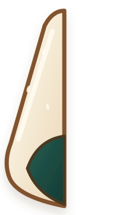
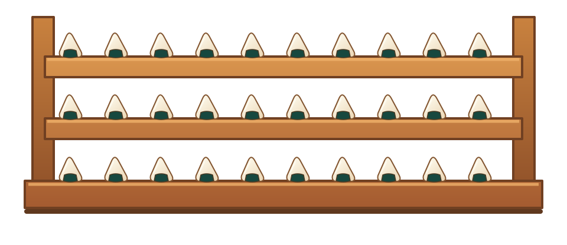
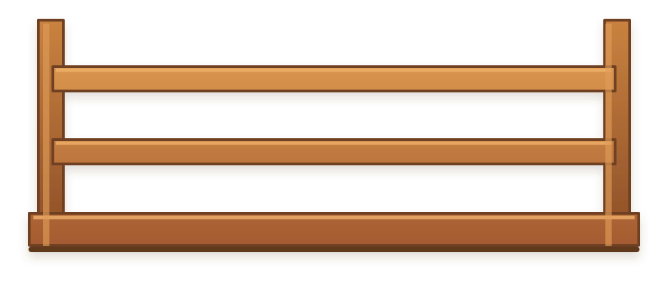
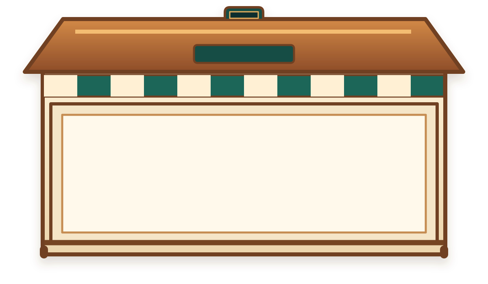
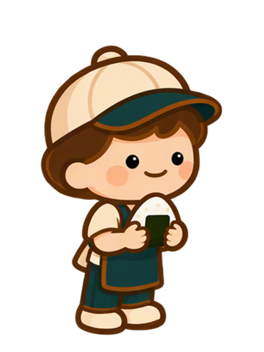

標準飯糰
圓角三角外型、米粒細節、海苔包覆，不帶表情或文字。
HANA · WORKER FRAME REFERENCE
飯糰、木造店面與舞台素材沿用統一的奶油色與焦糖木配色；員工動畫直接使用 product/src/worker/ 的透明 PNG 影格，依手持飯糰與空手行進方向切換。
圓角三角外型、米粒細節、海苔包覆，不帶表情或文字。
與商品同造型，中央米白區保留給名字文字層。

左右鏡像後組成打開的飯糰剖面。

每層十顆同款飯糰；整組可作滿架向下退場。

和滿載架同尺寸，供交替升降與後續補貨。

留白店招、屋頂出貨口與中央開放展示窗，便於分層組成場景。
暖奶油牆面與淺焦糖木地板，店面、飯糰和人物分層疊加。


由 key_frames_set_01 裁切出的 8 張統一尺寸影格。


由 key_frames_set_02 裁切出的 8 張影格，空手向右離場。

手持飯糰的步行影格；抵達貨架時放上飯糰，再改用空手影格向右離場。